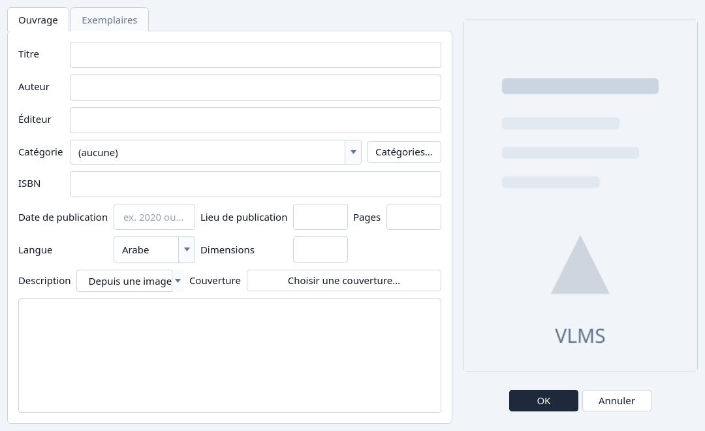
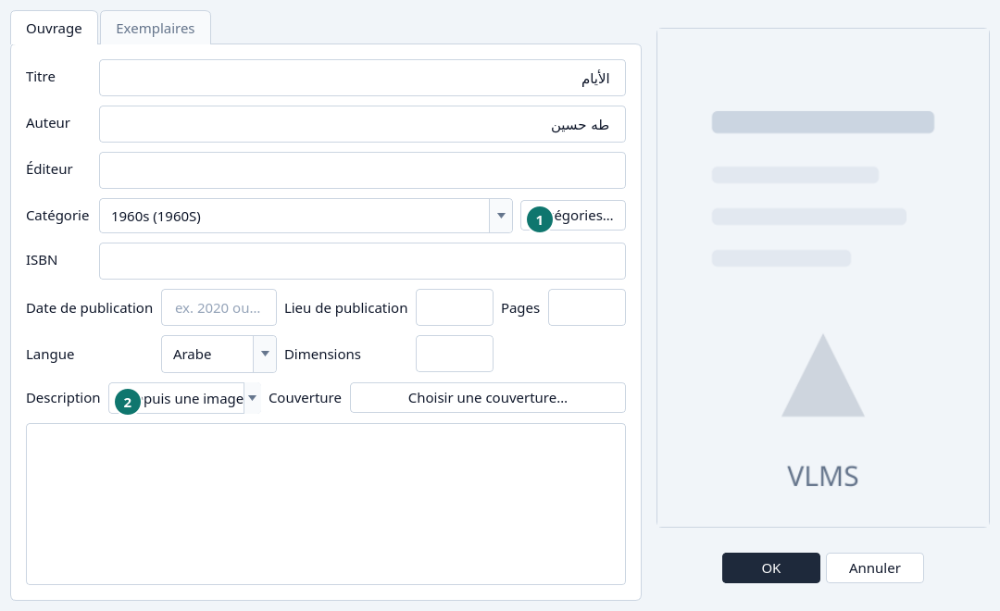
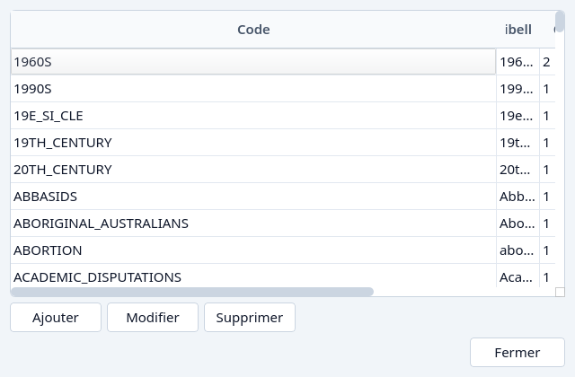
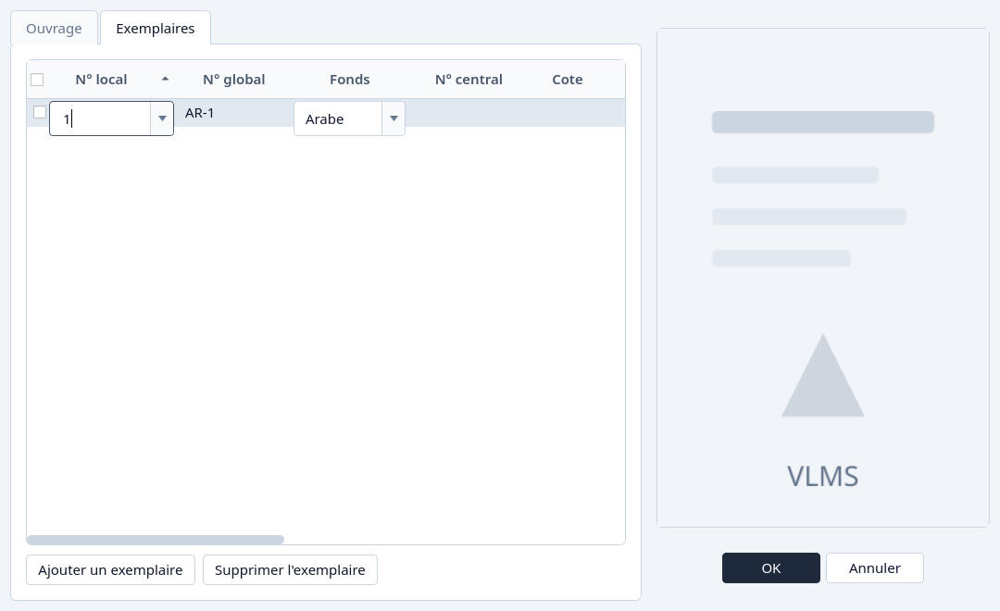
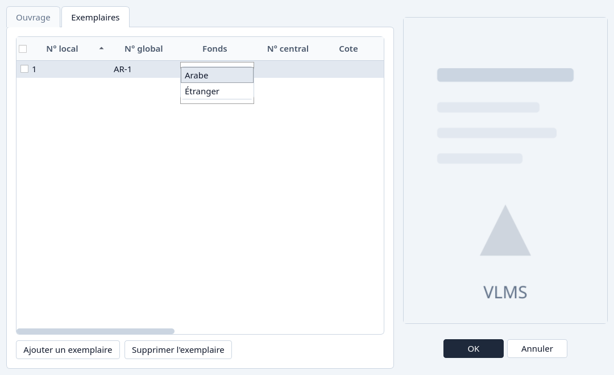

Ajouter un ouvrage
Ajouter un titre, ses exemplaires et une couverture.
Ajouter un titre
Cliquez Ajouter un ouvrage.
La fenêtre s'ouvre sur l'onglet Ouvrage. Titre et Langue sont obligatoires. Les autres champs peuvent attendre.

Ajouter un ouvrage, à l'ouverture. Remplissez l'onglet Ouvrage.
Saisissez le titre et l'auteur. Choisissez la langue. Choisissez une catégorie, ou laissez (aucune).

Un titre, un auteur, une langue et une catégorie. - Catégories… ouvre la liste des catégories sans quitter l'ouvrage.
- Depuis une image lit une photographie nette et peut remplir le titre, l'auteur et la description. Il lui faut une image lisible. Cela peut être indisponible sur cet ordinateur.
Ajoutez une catégorie si elle n'est pas dans la liste.
Catégories… liste chaque catégorie, avec Ajouter, Modifier et Supprimer. Fermez avec Fermer, puis choisissez la catégorie sur l'ouvrage.

La liste des catégories. Choisissez une couverture si vous en avez une.
Choisir une couverture… sur la ligne Couverture. L'image est rangée avec le titre.
Ouvrez l'onglet Exemplaires.
Ajouter un exemplaire ajoute une ligne. Un titre neuf a besoin d'au moins un exemplaire. La ligne prend le prochain numéro local, sauf si vous en choisissez un autre. Voir Réutiliser un numéro local.

L'onglet Exemplaires avec une ligne neuve. 
L'éditeur du numéro local : le prochain numéro, puis les numéros libres. Cliquez OK.
Annuler abandonne la fenêtre. Rien n'est enregistré avant OK.


Et si…
- Le titre est vide, ou la langue manque. La fenêtre reste ouverte et nomme le champ.
- Le numéro local est déjà utilisé par un autre exemplaire du même fonds. Choisissez un autre numéro, ou prenez-en un libre dans la liste.
- Le numéro était réservé pour un exemplaire encore en cours d'édition. Enregistrez ou annulez cet ouvrage d'abord.